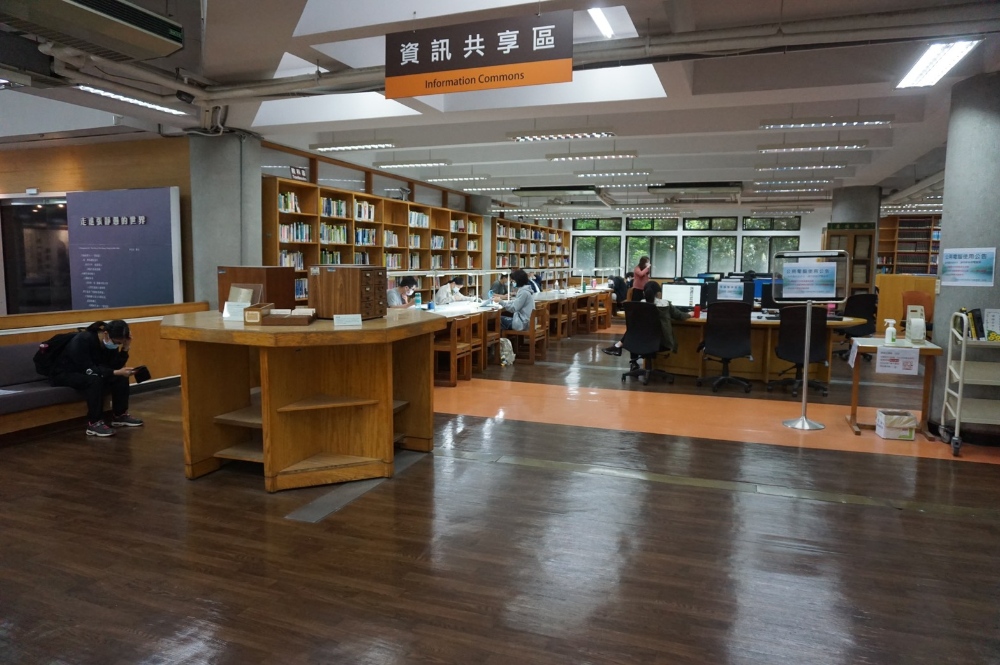
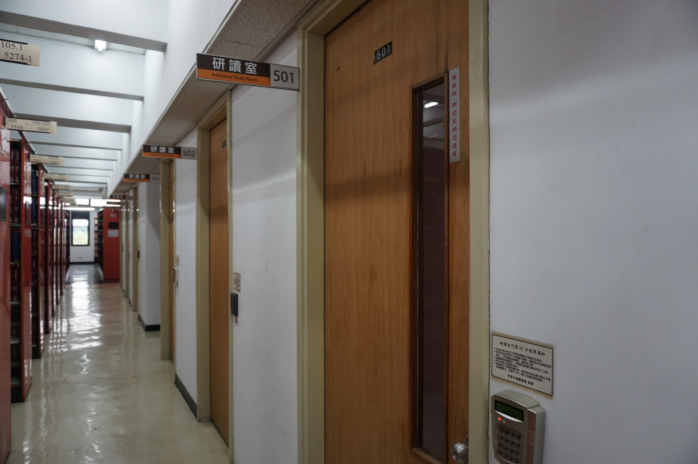
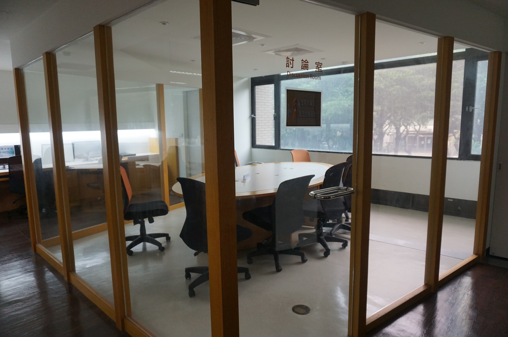

視聽區
視聽區位於本館二樓期刊區一側，設有六個電腦座位，提供觀賞公播版視聽資料、
線上VOD隨選視訊系統等閱聽服務。
視聽資料外借、歸還、取預約片，請至二樓借還書櫃台辦理。
資訊共享區
資訊共享區位於本館二樓，除了備有電腦及討論室，提供資訊服務及互動學習的共享空間外，此專區內亦包含其它收藏：

電腦設備共 36 台，僅供學術用途，具本館有效借書權限的讀者以 itouch 或圖書館帳密登入使用，
為避免佔位及有效控管電腦資源，讓每位師生都可公平使用，所有電腦滿座時可預約電腦座位。
此專區提供影印及網路列印服務，另備有掃描機供讀者免費使用。
設有討論室一間，供本校師生課程研討與研究之用，需自備電腦。
圖書館每學期依本校教師授課課綱系統清單，購置中西文教科書及課程參考書籍陳列於此專區， 目前此專區陳列之課程教科書約 2,000 冊，提供修習課程之學生參閱使用，不提供外借。
本館五樓設有研讀室 12 間，使用者限專兼任教師及研究生。
限當日借用，不提供線上預約。

討論空間
設有討論室一間，供本校師生課程研討與研究之用，需自備電腦。

本館三樓設有「創意學習室」一間，備有 25 台電腦、投影機、螢幕，提供本校教職 員工生，進行小團體教學研究、討論或影片欣賞使用。
本館於二樓資訊共享區設有投幣式的影印機，提供讀者進行影/列印服務。
共提供 9 台掃描機供讀者免費使用。二樓資訊共享區與四樓明月前身圖書室分別為8 台及1 台。
於四樓明月前身圖書室提供 2 台翻拍架，供讀者免費使用，讀者須自備拍照設備。